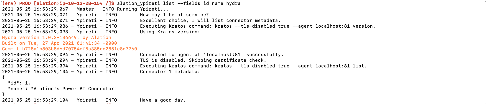
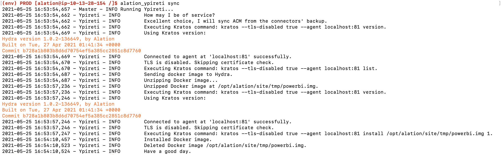
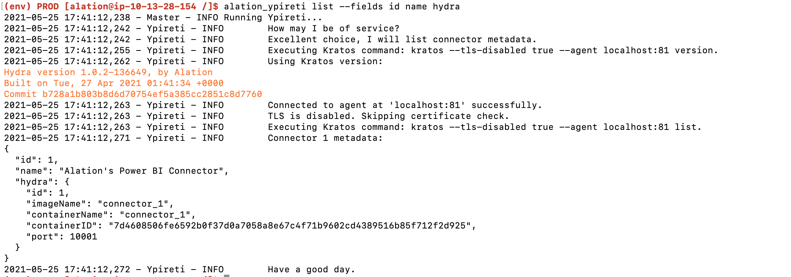

Restore OCF Components¶
Customer Managed Applies to customer-managed instances of Alation
Ensure Your OCF Connectors are Backed Up¶
Applies from release 2021.2
These steps require server-side access to Alation.
To check if the installed OCF connector is getting backed up by the Alation backup process, check the /opt/alation/site/site_data/ocf/connectors/ on the Alation host (path inside the Alation shell).
This directory exists if:
An OCF connector was installed on the 2021.2 Alation version (or newer)
An OCF connector that was installed on a previous version was updated after updating Alation to 2021.2.
If the directory does not exist, it means that the OCF connectors installed on the host are not getting backed up.
If the directory exists, list the contents of the directory to list the connector source files that are present in the backup path:
sudo /etc/init.d/alation shell ls /opt/alation/site/site_data/ocf/connectors/
{kind=link}
Note
The name of the Zip file includes the connector id. For example, in the name connector_1_1621628810, 1 is the connector id. The sequence of numbers after the id is the timestamp in Unix time.
You can use the list command to view the metadata of the connector with a specific id: alation_ypireti list --id <ID> --fields <field1_name> <field2_name>. This command should be run from the Alation shell as user alation, for example:
# To enter the shell: sudo /etc/init.d/alation shell # To change user to "alation": sudo su alation # To list the metadata of a specific connector alation_ypireti list --id 1 --fields id name hydra
Restore OCF Components After Restoring an Alation Backup¶
Release 2021.2 and Newer¶
Alation Connector Manager is not included into the Alation backup. When you restore Alation from a backup on a clean instance, Alation Connector Manager needs to be re-installed on the host after restoring Alation.
The OCF connectors are included into the backup. When you install or update an OCF connector on an Alation instance, it is automatically added to the backup path at /opt/alation/site/site_data/ocf/connectors/ (path inside the Alation shell) and included into the Alation backup.
After you restore Alation from a backup that includes OCF connectors, you can restore the backed up OCF connectors using the alation_ypireti sync command.
To restore the OCF system on an instance that was restored from a backup:
SSH to the Alation host where you restored Alation from a backup.
Install Docker and then install Alation Connector Manager, following the steps for release 2021.2 in Install Alation Connector Manager. Note that from release 2021.2, it is recommended to install Docker using the Alation Container Service.
After installing and configuring Alation Connector Manager, make sure the
agentis running:sudo docker ps
This command should return the
agentcontainer:$ sudo docker ps CONTAINER ID IMAGE COMMAND CREATED STATUS PORTS NAMES e33c5484f846 agent "agent" 11 seconds ago Up 10 seconds agent
Note that no OCF connectors are listed as running because they have not been installed on the restored instance yet.
Run the alation_ypireti list command to check which OCF connectors existed on the instance that was backed up and restored. This command should be run from the Alation shell as user
alation:4.1. Enter the Alation shell.
sudo /etc/init.d/alation shell
4.2. Change the user to
alation.sudo su alation
4.3. Run the following command:
alation_ypireti list --fields id name hydra
At this point, the list command will output the id and name fields but no
hydrafield information. This is expected because the newly installed Connector Manager does not have information about the backed up connector images yet. This is indicative of the state when Alation Connector Manager and the Alation internal database are not synchronized.Still in the Alation shell and as user
alation, run the alation_ypireti sync command to ensure that Alation and Alation Connector Manager have the same set of connectors:alation_ypireti syncThe alation_ypireti sync command first deletes all connector records on Alation Connector Manager and then restores them from the backed-up source files located at /opt/alation/site/site_data/ocf/connectors/.
Run the list command again to verify that synchronization was successful:
alation_ypireti list --fields id name hydra
Now this command should return the id, name, and
hydrafields with Docker container information of the installed connector:
If there are no backup source files found for a connector with a specific id, the alation_ypireti sync output will contain a warning to update the connector, for example:
2021-04-16 05:23:16,186 - Ypireti - WARNING No package backup found for connector 2. Please update the connector manually. E.g. alation_ypireti update --id 2 --path <path_to_connector_zip>
In such a case, you need to manually reinstall the connector onto its existing ID (see the steps in Releases 2020.3, 2020.4, and 2021.1 below).
Releases 2020.3, 2020.4, and 2021.1¶
OCF components (Alation Connector Manager and OCF connectors) are not included into the Alation backup. When you restore Alation from a backup on a clean instance, OCF components need to be re-installed. The Docker images of the OCF connectors that were installed on the instance that was backed-up need to be installed onto their IDs that already exist in the backup data.
Perform the steps below to restore OCF components after restoring Alation from a backup:
On the Alation host where you restored the backup, install and configure Alation Connector Manager:
Run the command below to retrieve the IDs of OCF connectors that were installed on the backed-up instance:
2.1. Enter the Alation shell.
sudo /etc/init.d/alation shell
2.2. Change the user to
alation.sudo su alation
2.3. Run the following command:
alation_ypireti list --fields id name hydra
Note that in the this command will only output the connector
idandnamemetadata and nohydrafield information. It is expected because the connector manager does not have the Docker image yet. This way, you find out which OCF connector needs to be installed onto which ID in the backup:2020-10-28 06:21:18,800 - Ypireti - INFO Connector 1 metadata: { "id": 1, "name": "Alation's Tableau Connector" }
Place the connector Zip file into a directory on the Alation host that is accessible from the Alation shell, for example, to data1/tmp.
Navigate to this directory on the host, in the Alation shell.
Un-pack the connector package, for example:
unzip alation-oracle-1.0.0.61.zipInstall the OCF connector Docker image onto its old ID:
Release 2020.3.x:
kratos --tls-disabled true --agent localhost:81 install ./<OCF_connector_name>.img <ID>
Release 2020.4.x and newer versions:
alation_ypireti kratos --subcommand install ./<OCF_connector_name>.img <ID>
Example:
alation_ypireti kratos --subcommand install ./alation-oracle-ocf:1.0.0.61.img 1
Verify that the installation was successful:
alation_ypireti list --fields id name hydra
This command should return the
id,name, andhydrafields with Docker container information of the installed connector, for example:2020-10-28 06:39:50,245 - Ypireti - INFO Connector 1 metadata: { "id": 1, "name": "Alation's Tableau Connector", "hydra": { "port": 10001, "containerName": "connector_1", "imageName": "connector_1", "id": 1, "containerID": "3e8fca3db28a5adcbb1401bdafddbc9517af2e08fa5db5f4a0398c99a928b56e" } }
In the Alation Catalog, go to the Settings page of the source that uses the restored OCF connector and test the connection.